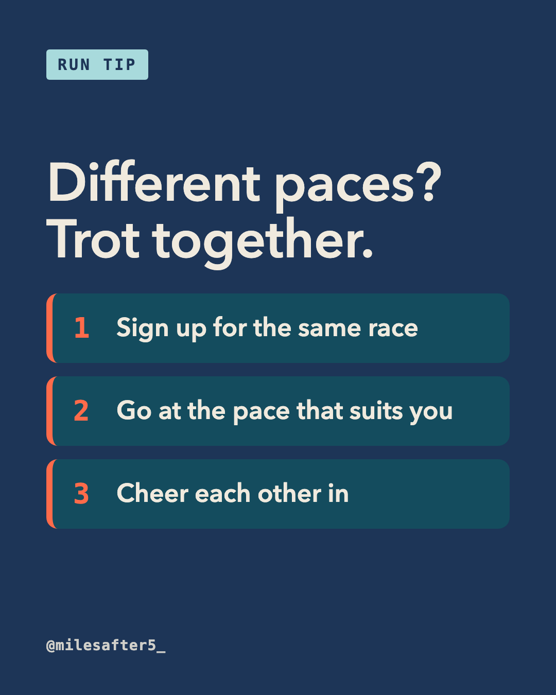

Running Tips
Tips for every pace
Practical tips from our weekly posts for getting ready for race day, enjoying your runs and easing back in afterward. Save the ones you like and send them to your running buddy.
-
Race preparation
Different paces? Trot together.
Running a race with friends who all run at different speeds? Make it a group plan:
- Pick the race as a group and drop the sign-up link in the group chat.
- Sign up for the same race, then each go at the pace that suits you.
- Cheer each other in at the finish, until the whole crew is together again.
-
Race preparation
Pack your run bag before work
Evenings get darker in the fall, so make the after-work run easy to say yes to. In the morning, put your run clothes, a warm layer, gloves and something bright in your bag. When you clock out, you can lace up and go, no trip home first.
-
Running performance
Find a pace you can chat at
It's called the talk test: if you can talk in full sentences while you run, that's a pace you can share with a friend. A running buddy makes it easy to check. Your pace is your own.
-
Running performance
Layer up and be seen
For cool evening runs, wear layers you can peel off mid-run, plus something bright or reflective on top and a small light, so you're easier to spot.
-
Recovery
After the finish, keep it social
Don't rush off once you cross the line. Walk it out with your crew, grab your layer and some water, and swap stories from the course. Came for the miles, stayed for the company.
-
Recovery
Plan an easy day after race day
Put a rest day or an easy, chatty run on the calendar for the day after a race, and make plans with a friend so you have something to look forward to. Our beginner plan builds rest days into every week.

Ready for race day?
Pick a race and make a plan
Find an upcoming race near you, then send it to the group chat.
Open the Race LocatorThese are general, practical tips, not medical advice. Listen to your body, and talk to a doctor if you have questions about your health.